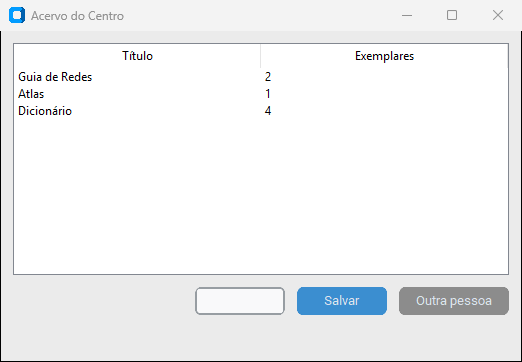
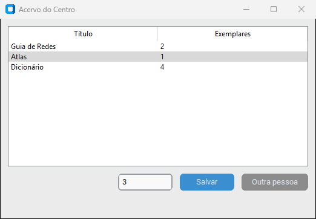
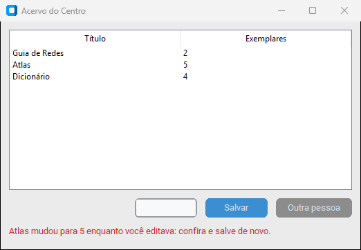
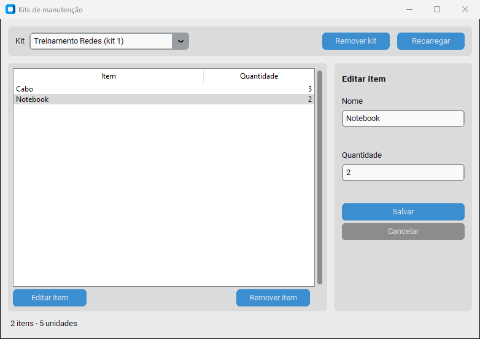
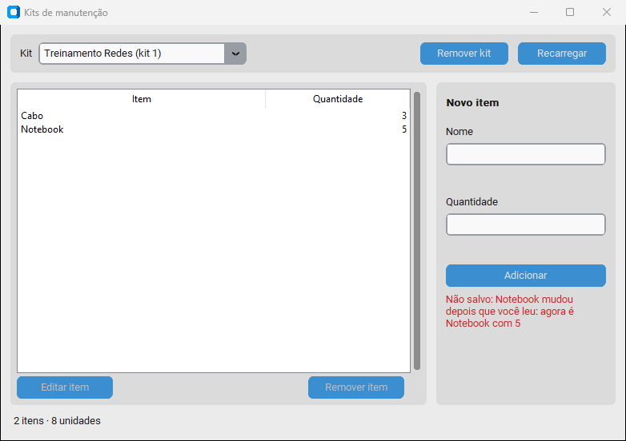

Técnico em Desenvolvimento de Sistemas · Plano de Curso 01/2025
Edite sem atropelar ninguém: edição, exclusão e sincronização
A janela da A13 grava e apaga, mas não edita, e só mostra o que outras pessoas gravaram quando alguém clica em Recarregar. Hoje o item escolhido vai para o formulário e volta ao banco com Salvar, sem sobrescrever o que outra pessoa mudou nesse meio-tempo; a lista se atualiza sozinha a cada 10 segundos sem atrapalhar quem está editando; e kits vazios podem ser removidos. No fim, você depura uma edição herdada que perdia alterações e deixava a janela cada vez mais lenta.
A aula continua na janela da A13, no MySQL da A08 e com o em_transacao da A10. A janela passa a receber um objeto com os métodos de dados, no lugar das funções soltas. Use dados fictícios.
Uma versão herdada da edição, abrir_legado.py, foi usada por duas técnicas ao mesmo tempo, e vieram quatro relatos. A primeira leu o Notebook com 2, a segunda salvou 5 e a primeira, sem saber, salvou 1: ficou 1, e o 5 sumiu sem aviso. Outra pessoa removeu o kit Treinamento Redes, e os itens dele foram embora junto.
Os outros dois são da atualização automática. No meio de uma edição, o formulário volta para Novo item e o que foi digitado some. E, depois de alguns minutos aberta, a janela fica lenta, enquanto o MySQL mostra cada vez mais consultas.
Em dupla, antes de abrir o código: qual dos relatos não seria resolvido nem que cada técnica clicasse em Recarregar antes de salvar?
Entrega desta aula
No repositório do projeto: editar_item e ItemMudou em kits/repositorio.py; abrir_janela.py com a classe DadosMySQL; kits/janela.py com edição, sincronização e Remover kit; tests/test_janela.py e tests/test_fontes.py; e a seção Edição e sincronização no README.md. Faça um commit revisado e envie pelo canal combinado com a turma junto com o registro exportado desta página. Critério: os testes passam e, com duas janelas abertas, a segunda a salvar o mesmo item recebe Não salvo:.
O formulário da A12 serve para os dois casos. Editar item põe o nome e a quantidade da linha escolhida nos campos, troca o título para Editar item e o botão para Salvar, e mostra Cancelar. Enter e Salvar passam pela mesma validação do domínio; o que muda é quem recebe o item: editar, em vez de adicionar. Cancelar, trocar de kit ou terminar o Salvar, com sucesso ou recusa, voltam ao modo Novo item.
Ao entrar em edição, a janela guarda o item como ele estava naquela hora: o id e um ItemKit com o nome e a quantidade lidos. Esse antes vai junto para editar(item_id, antes, depois). É ele que permite descobrir se alguém mexeu no item enquanto a pessoa editava.
Esconder e mostrar um widget sem destruí-lo é com grid_remove e grid: o Cancelar volta ao mesmo lugar da grade, com as mesmas opções.
O relato 1 tem nome: atualização perdida. Duas pessoas leem o mesmo valor, as duas mudam e a segunda a gravar apaga a mudança da primeira, sem que ninguém perceba. O banco não errou: cada UPDATE foi correto sozinho. O que faltou foi conferir, na hora de gravar, se o item ainda era o que a pessoa tinha visto.
editar_item faz isso numa transação. Primeiro, lê o item com SELECT ... FOR UPDATE, que trava a linha até o commit. Depois, compara com o antes: se o nome ou a quantidade mudaram, recusa com ItemMudou, uma ValueError com a situação de agora. Só então grava. Duas edições ao mesmo tempo não passam juntas pela conferência: a segunda espera a trava e encontra o valor novo. Os testes do projeto provam isso com duas técnicas; sem o FOR UPDATE, as duas salvam.
Um atalho tentador é fazer o UPDATE com WHERE id = %s AND quantidade = %s e conferir o rowcount. No MySQL, o rowcount de um UPDATE conta as linhas que mudaram de fato: salvar sem mudar nada também dá 0, e a janela acusaria um conflito que não houve. Por isso a conferência é feita pela leitura.
As duas técnicas, com e sem conferência
Tempo
Técnica 1
Técnica 2
Sem conferência
Com conferência
1
Lê Notebook 2
Lê Notebook 2
2
Salva 5
Banco: 5
Banco: 5
3
Salva 1
Banco: 1; o 5 se perdeu
Recusado: agora é Notebook com 5
Gravar pelo id e pronto
O último a salvar vence, e ninguém fica sabendo do que se perdeu.
cur.execute('UPDATE item SET nome = %s, quantidade = %s WHERE id = %s',
(depois.nome, depois.quantidade, item_id))
Travar, conferir, gravar
Na mesma transação; o FOR UPDATE faz a segunda edição esperar e ver o valor novo.
cur.execute('SELECT kit_id, nome, quantidade FROM item WHERE id = %s FOR UPDATE', (item_id,))
...
if (nome, quantidade) != (antes.nome, antes.quantidade):
raise ItemMudou(...)
Sem sincronizar, a janela mostra o banco como estava no último clique. O after da A11 agenda uma função para daqui a tantos milissegundos, sem parar o mainloop: self.after(10_000, self.sincronizar). Para repetir, a própria função agenda a próxima no fim. Cada after devolve um identificador; guardado, ele permite cancelar o agendamento com after_cancel, como faz o destroy da janela.
Ler de novo apaga e recria as linhas, e com elas a seleção. A sincronização guarda o iid escolhido e o devolve com selection_set, se o item ainda existir. Durante uma edição, ela não mexe em nada: apagar os campos seria o relato 3, e a conferência do Salvar já descobre se o item mudou.
O agendamento acontece num lugar só. No relato 4, recarregar também agendava uma sincronização, e a sincronização chamava recarregar: cada ciclo criava dois, que criavam quatro, depois oito. Em poucos minutos, a janela passa o tempo todo consultando. O teste do projeto conta as leituras num intervalo curto e falha se elas se acumulam.
Dez segundos por janela aberta
Cada janela aberta faz uma leitura a cada 10 segundos. Com 30 janelas, são 3 leituras por segundo: pouco para o MySQL. Com um intervalo de 100 milissegundos, seriam 300, e cada uma abre uma conexão. Escolha o intervalo pelo tempo que alguém aceita ver um dado velho.
Com editar e remover_kit, a janela precisaria de sete funções soltas, na ordem certa. Fica mais simples receber um objeto, dados, e chamar métodos dele: self._dados.listar_itens(kit_id), self._dados.editar(...). A janela não pergunta de que classe ele é. Basta ter os métodos com esses nomes, como a função que ela recebia antes só precisava aceitar os argumentos certos.
No aplicativo, dados é um DadosMySQL, em abrir_janela.py: cada método é uma consulta ou uma em_transacao, passando por protegido. Nos testes, é o BancoDeMentira, que já existia na A13 e só ganhou editar e remover_kit. perguntar continua separado: não é dado, é conversa com quem usa.
Remover kit usa o remover_kit da A09: só remove kit vazio, e o MySQL recusa um kit com itens (erro 1451), traduzido em KitComItens. O DadosMySQL troca KitComItens por ValueError, que a janela sabe mostrar, sem a janela precisar conhecer o repositório. O relato 2 apagava os itens antes do kit: a A09 decidiu recusar, porque um kit com itens removido por engano leva junto um estoque que ninguém conferiu.
O tutorial usa o acervo em memória da A13. Crie acervo.py na raiz do projeto com o código do passo 1. O passo 2 entra antes do janela.mainloop(); os passos 3 e 4 trocam funções, como diz cada legenda. Rode com .\.venv\Scripts\python.exe acervo.py. O botão Outra pessoa faz o papel de alguém que muda o Atlas para 5 em outra janela.
As imagens são capturas reais das janelas geradas por esse código, depois das ações de cada legenda, no Windows 11 com CustomTkinter 6.0.0. Nos passos 2 e 3, a captura chama atualizar na hora, em vez de esperar os 2 segundos: o código que roda é o mesmo.
Escolha o Atlas, troque o 1 por 3 no campo e espere 2 segundos sem salvar.

Repare: A atualização apagou e recriou as linhas; a seleção sumiu, o <<TreeviewSelect>> limpou o campo, e o 3 foi embora.
Passo 3 · Troque a função atualizar
def atualizar():
escolhido = lista.selection()
editando = escolhido and exemplares.get() != str(ACERVO[int(escolhido[0])][1])
if not editando:
mostrar()
if escolhido and lista.exists(escolhido[0]):
lista.selection_set(escolhido)
janela.after(2000, atualizar)
Passo 3 · Atualizar sem atrapalhar
Repita: escolha o Atlas, digite 3 e espere.

Repare: Com o campo diferente do valor lido, a atualização espera; sem edição, ela relê e devolve a seleção.
Passo 4 · Troque as funções selecionou e gravar
lido = {}
def selecionou(_evento):
exemplares.delete(0, 'end')
if lista.selection():
livro_id = int(lista.selection()[0])
lido['livro'] = ACERVO[livro_id]
exemplares.insert(0, str(ACERVO[livro_id][1]))
def gravar():
livro_id = int(lista.selection()[0])
titulo, agora = ACERVO[livro_id]
if (titulo, agora) != lido['livro']:
aviso.configure(text=f'{titulo} mudou para {agora} enquanto você editava: confira e salve de novo.',
text_color='#c62828')
mostrar()
return
ACERVO[livro_id] = (titulo, int(exemplares.get()))
aviso.configure(text=f'Salvo: {titulo} com {exemplares.get()}', text_color=('gray10', '#DCE4EE'))
mostrar()
Passo 4 · Outra pessoa mudou antes
Escolha o Atlas, clique em Outra pessoa, digite 3 e clique em Salvar.

Repare: selecionou guardou o Atlas como estava (1). Na hora de salvar, ele já era 5: a gravação foi recusada, e a lista mostra o valor de agora.
Continue no repositório do projeto, na raiz, com o .venv e o banco.ini da A08. Uma pessoa opera e a outra confere; troquem os papéis depois do intervalo.
A ordem importa: repositório, DadosMySQL com os testes no kits_teste, janela com os testes de mentira e só então a edição herdada. Se consultar IA, registre a ajuda recebida e confirme cada sugestão rodando os testes.
Editando o Notebook
Capturada com abrir_janela.py lendo o banco kits, depois de escolher o Notebook e clicar em Editar item.

Quando outra pessoa salvou antes
Capturada com abrir_janela.py: o Notebook foi para 5 por outra conexão enquanto a janela editava, e a janela tentou salvar 1.

kits/repositorio.py: editar_item e ItemMudou
Acrescente ItemMudou e editar_item(con, item_id, antes, depois) ao repositório, seguindo os comentários: trava e lê, recusa item sumido com LookupError, item mudado com ItemMudou e nome repetido no kit com ValueError, e só então grava pelo id. Não faz commit nem rollback e não confia no rowcount. Entrega: kits/repositorio.py.
Concluído quando: Os testes de edição de tests/test_fontes.py passam, inclusive o das duas edições ao mesmo tempo e o de salvar sem mudar nada, e os testes das aulas anteriores continuam passando.
Dica para realizar a atividade
Volte à tabela das duas técnicas. Em que linha da sua função a técnica 1 descobre o 5?
# Acrescente ao fim do seu kits/repositorio.py.
class ItemMudou(ValueError):
"""O item não está mais como foi lido: outra pessoa o mudou depois da leitura."""
def editar_item(con, item_id, antes, depois):
"""Troca nome e quantidade do item, se ele ainda estiver como antes (o ItemKit que a janela leu).
Não grava nem desfaz: rode dentro de em_transacao."""
# 1. Leia kit, nome e quantidade do item TRAVANDO a linha. Item que não existe: LookupError.
# 2. Se nome e quantidade não são mais os de antes: ItemMudou, dizendo como o item está agora.
# 3. Se outro item do mesmo kit já tem o nome novo: ValueError('O kit já tem um item Nome'),
# com o nome como está no banco.
# 4. Troque nome e quantidade pelo id.
# Não use o rowcount do UPDATE para descobrir se o item mudou: ele dá 0 também quando
# os valores novos são iguais aos que já estavam.
...
Na raiz do projeto. Testes: .\.venv\Scripts\python.exe -m unittest -v, na raiz do projeto, com o MySQL ligado e o banco.ini da A08. Os testes recriam as tabelas no kits_teste; o kits fica intacto.
abrir_janela.py: a classe DadosMySQL
Troque fontes e gravacoes da A13 pela classe DadosMySQL do arquivo, completando os métodos que faltam e o remover_kit, que traduz KitComItens em ValueError. protegido é o mesmo da A13. O if __name__ entrega DadosMySQL() e perguntar à janela. Entrega: abrir_janela.py.
Concluído quando: Os catorze testes de tests/test_fontes.py passam, inclusive os três que você vai completar, e a janela abre com os itens do banco kits.
Dica para realizar a atividade
_consultar e _gravar já fazem a parte repetida. Quantas linhas sobram para cada método?
"""Abre a janela de itens ligada ao MySQL. Uso: python abrir_janela.py"""
from tkinter import messagebox
import mysql.connector
from kits.banco import conexao_banco, em_transacao
from kits.janela import JanelaItens
from kits.repositorio import (KitComItens, adicionar_item, editar_item, listar_itens, listar_kits, remover_item,
remover_kit)
# Erros do conector que querem dizer "o MySQL não está respondendo": recusado, perdido no meio, fechado.
SEM_CONEXAO = {2003, 2005, 2013, 2055}
def protegido(operacao):
"""O mesmo da A13."""
...
class DadosMySQL:
"""Tudo o que a janela pede, lido e gravado no MySQL. Cada consulta é uma conexão própria;
cada gravação, uma em_transacao. A janela só conhece os nomes dos métodos."""
def __init__(self, config=None):
self.config = config
def _consultar(self, funcao, *args):
def operacao():
with conexao_banco(self.config) as con:
return funcao(con, *args)
return protegido(operacao)
def _gravar(self, funcao, *args):
return protegido(lambda: em_transacao(lambda con: funcao(con, *args), self.config))
def listar_kits(self):
return self._consultar(listar_kits)
# Escreva listar_itens(kit_id), adicionar(kit_id, item), editar(item_id, antes, depois) e
# remover(item_id), cada um com _consultar ou _gravar e a função do repositório.
def remover_kit(self, kit_id):
"""Grava com remover_kit da A09. KitComItens vira ValueError com a mesma mensagem."""
...
def perguntar(texto):
return messagebox.askyesno('Confirmar', texto)
if __name__ == '__main__':
JanelaItens(DadosMySQL(), perguntar).mainloop()
Na raiz do projeto. Testes: .\.venv\Scripts\python.exe -m unittest -v, na raiz do projeto, com o MySQL ligado e o banco.ini da A08. Os testes recriam as tabelas no kits_teste; o kits fica intacto.
tests/test_fontes.py: editar e remover kit
O arquivo substitui o da A13 e testa o DadosMySQL. Ele já tem onze testes, inclusive o das duas edições ao mesmo tempo e o da janela editando no banco. Escreva os três marcados com Complete: salvar sem mudar nada não é conflito; renomear para um nome que o kit já tem é recusado; e o kit com itens não é removido. Entrega: tests/test_fontes.py.
Concluído quando: Os catorze testes passam com o seu código. Depois troque, em editar_item, a conferência pela leitura por um UPDATE com WHERE id AND nome AND quantidade e um if cur.rowcount == 0: raise ItemMudou: o teste de salvar sem mudar nada precisa falhar. Desfaça a troca.
Dica para realizar a atividade
Para provar que nada mudou, compare o estoque inteiro com o ESTOQUE_INICIAL.
"""A janela ligada ao MySQL pelo DadosMySQL: cada teste recria as tabelas no kits_teste."""
import threading
import unittest
from abrir_janela import DadosMySQL
from kits.banco import conexao_banco
from kits.janela import JanelaItens
from kits.modelo import ItemKit
from kits.repositorio import ItemMudou
from tests.test_janela import fechar
from tests.test_repositorio import TESTE, comandos
ESTOQUE_INICIAL = [(1, 1, 'Cabo', 3), (2, 1, 'Notebook', 2), (3, 2, 'Cabo', 5)]
class TestFontes(unittest.TestCase):
def setUp(self):
# Uma conexão esquecida com a transação aberta segura as tabelas e faria o DROP TABLE do esquema
# esperar para sempre. Com 5 segundos, o teste falha com o erro 1205 em vez de travar.
self.gravar('SET SESSION lock_wait_timeout = 5',
*[c for script in ('esquema.sql', 'dados.sql') for c in comandos(script)])
self.dados = DadosMySQL(TESTE)
def gravar(self, *sqls):
with conexao_banco(TESTE) as con:
cur = con.cursor()
for sql in sqls:
cur.execute(sql)
def estoque(self):
with conexao_banco(TESTE) as con:
cur = con.cursor()
cur.execute('SELECT id, kit_id, nome, quantidade FROM item ORDER BY id')
return cur.fetchall()
# A11 e A13: ler, adicionar, remover.
def test_kits_em_ordem_alfabetica(self):
self.gravar("INSERT INTO kit (nome) VALUES ('Almoxarifado')")
self.assertEqual([nome for _, nome in self.dados.listar_kits()],
['Almoxarifado', 'Treinamento Redes', 'Treinamento Suporte'])
def test_consulta_seguinte_ve_o_que_outra_conexao_gravou(self):
self.assertEqual(len(self.dados.listar_itens(1)), 2)
self.gravar("INSERT INTO item (kit_id, nome, quantidade) VALUES (1, 'Alicate', 4)")
self.assertIn('Alicate', [nome for _, nome, _ in self.dados.listar_itens(1)])
def test_adicionar_soma_no_item_de_mesmo_nome_do_kit(self):
self.assertEqual(self.dados.adicionar(1, ItemKit('Cabo', 2)), 1)
self.assertEqual(self.estoque()[0], (1, 1, 'Cabo', 5))
def test_remover_apaga_so_o_item_pedido(self):
self.dados.remover(1)
self.assertEqual(self.estoque(), ESTOQUE_INICIAL[1:])
def test_banco_fora_do_ar_vira_connection_error(self):
fora = DadosMySQL({**TESTE, 'port': 1, 'connection_timeout': 3})
for nome, chamada in (('listar_kits', fora.listar_kits), ('editar', lambda: fora.editar(1, ItemKit('Cabo', 3), ItemKit('Cabo', 4))),
('remover_kit', lambda: fora.remover_kit(1))):
with self.subTest(nome):
with self.assertRaisesRegex(ConnectionError, 'erro 2003'):
chamada()
# A14: editar.
def test_editar_troca_nome_e_quantidade(self):
self.dados.editar(2, ItemKit('Notebook', 2), ItemKit('Notebook i5', 3))
self.assertEqual(self.estoque()[1], (2, 1, 'Notebook i5', 3))
def test_editar_o_que_outra_pessoa_mudou_e_recusado_e_nada_muda(self):
self.gravar('UPDATE item SET quantidade = 5 WHERE id = 2')
with self.assertRaises(ItemMudou):
self.dados.editar(2, ItemKit('Notebook', 2), ItemKit('Notebook', 1))
self.assertEqual(self.estoque()[1], (2, 1, 'Notebook', 5))
def test_editar_item_removido_vira_lookup_error(self):
self.gravar('DELETE FROM item WHERE id = 2')
with self.assertRaises(LookupError):
self.dados.editar(2, ItemKit('Notebook', 2), ItemKit('Notebook', 1))
def test_duas_edicoes_do_mesmo_item_ao_mesmo_tempo_uma_vence_e_a_outra_e_avisada(self):
largada = threading.Barrier(2)
resultados = []
def tecnico(quantidade):
largada.wait()
try:
self.dados.editar(2, ItemKit('Notebook', 2), ItemKit('Notebook', quantidade))
resultados.append('salvou')
except ItemMudou:
resultados.append('avisado')
tecnicos = [threading.Thread(target=tecnico, args=(q,)) for q in (7, 8)]
for t in tecnicos:
t.start()
for t in tecnicos:
t.join()
self.assertEqual(sorted(resultados), ['avisado', 'salvou'])
self.assertIn(self.estoque()[1][3], (7, 8))
# A14: remover kit.
def test_remover_kit_vazio(self):
self.gravar("INSERT INTO kit (id, nome) VALUES (3, 'Almoxarifado')")
self.dados.remover_kit(3)
self.assertEqual([k for k, _ in self.dados.listar_kits()], [1, 2])
def test_janela_com_o_banco_edita(self):
janela = JanelaItens(self.dados, lambda texto: True, intervalo_ms=60_000)
self.addCleanup(fechar, janela)
janela.update()
janela.lista.selection_set('2')
janela.update()
janela.editar.invoke()
janela.quantidade.delete(0, 'end')
janela.quantidade.insert(0, '4')
janela.adicionar.invoke()
self.assertEqual(self.estoque()[1], (2, 1, 'Notebook', 4))
self.assertEqual(janela.aviso.cget('text'), 'Salvo: Notebook (4).')
# Complete: editar o Notebook com os mesmos nome e quantidade não levanta nada e não muda o estoque.
# Complete: renomear o Notebook para cabo levanta ValueError com 'O kit já tem um item Cabo', e nada muda.
# Complete: remover_kit(1) levanta ValueError com 'Kit 1 ainda tem itens', e nada some.
Na raiz do projeto. Testes: .\.venv\Scripts\python.exe -m unittest -v, na raiz do projeto, com o MySQL ligado e o banco.ini da A08. Os testes recriam as tabelas no kits_teste; o kits fica intacto.
kits/janela.py: editar, sincronizar e remover kit
Faça na sua JanelaItens da A13 as mudanças descritas no arquivo: o objeto dados no lugar das funções; Editar item, Cancelar e o modo de edição; sincronizar, que relê a cada intervalo_ms mantendo kit e seleção e que espera durante a edição; destroy cancelando a leitura agendada; e Remover kit com pergunta. Ajuste o tests/test_janela.py pelo arquivo do campo seguinte. A janela continua sem importar nada do banco. Entrega: kits/janela.py.
Concluído quando: Os trinta e um testes de tests/test_janela.py passam, inclusive os três que você vai completar, e as duas imagens acima se repetem na sua máquina.
Dica para realizar a atividade
Volte aos passos 2 e 3 do tutorial. E onde fica o único self.after que agenda a próxima leitura?
# Mudanças na sua kits/janela.py da A13. O resto da JanelaItens continua igual.
class JanelaItens(ctk.CTk):
"""dados tem listar_kits(), listar_itens(kit_id), adicionar(kit_id, item), editar(item_id, antes, depois),
remover(item_id) e remover_kit(kit_id); qualquer um pode recusar com LookupError, ValueError ou
ConnectionError. perguntar(texto) devolve True ou False. A lista é lida de novo a cada intervalo_ms."""
def __init__(self, dados, perguntar, intervalo_ms=10_000):
# As funções da A13 viram métodos de dados: self._dados.listar_kits() e os outros.
# self._editando = None: (item_id, ItemKit como foi lido) enquanto o formulário edita.
# No fim, depois do recarregar, agende a primeira sincronização com self.after.
...
def _montar_topo(self):
# Ao lado do Recarregar, self.remover_kit: Remover kit, chamando self.remover_kit_atual.
# O seletor passa a chamar self._trocou_kit, que cancela a edição e mostra o kit.
...
def _montar_lista(self):
# Ao lado do Remover item, self.editar: Editar item, desligado, chamando self.editar_selecionado.
# O <<TreeviewSelect>> liga e desliga os dois.
...
def _montar_formulario(self):
# self.titulo_form: o rótulo Novo item, que vira Editar item.
# self.cancelar: Cancelar, chamando self.cancelar_edicao, escondido com grid_remove até editar.
...
def item_selecionado(self):
"""(id, nome, quantidade) da linha escolhida, com a quantidade como int, ou None."""
...
def sincronizar(self):
"""Lê de novo, mantendo o kit e a linha escolhida. Durante uma edição, não mexe em nada.
Agenda a próxima leitura uma vez só, aqui no fim: recarregar não agenda nada."""
...
def destroy(self):
# Cancele a leitura agendada antes de chamar super().destroy().
...
def editar_selecionado(self):
"""Põe o item escolhido no formulário, guarda como foi lido e troca Adicionar por Salvar."""
...
def cancelar_edicao(self):
"""Volta para Novo item, com os campos vazios. Sem edição em andamento, não faz nada."""
...
def confirmar(self):
# Como na A13; em edição, chama self._dados.editar(item_id, antes, depois). Depois de salvar,
# com sucesso (Salvo: Nome (q).) ou recusa (Não salvo: ...), volta para Novo item e mostra a lista.
...
def remover_kit_atual(self):
"""Pergunta ('Remover o kit Rótulo? A remoção não pode ser desfeita.') e remove o kit escolhido.
Recusa: Kit não removido: e a mensagem. Sucesso: Kit removido: Rótulo. e recarregar."""
...
Na raiz do projeto. Testes: .\.venv\Scripts\python.exe -m unittest -v, na raiz do projeto. Os testes da janela usam um banco de mentira e abrem janelas de verdade por alguns instantes; não mexa no mouse nem no teclado enquanto rodam.
tests/test_janela.py: edição e sincronização
O arquivo substitui o da A13: a janela recebe o BancoDeMentira inteiro, que ganhou editar e remover_kit, e um intervalo de 60 segundos, para nenhuma sincronização acontecer sozinha no meio de um teste. Ele já tem vinte e oito testes, inclusive o que conta as leituras com um intervalo de 200 milissegundos. Escreva os três marcados com Complete. Entrega: tests/test_janela.py.
Concluído quando: Os trinta e um testes passam com o seu código. Depois faça o recarregar agendar também um self.after(self._intervalo, self.sincronizar): o teste das leituras precisa falhar. Desfaça a troca.
Dica para realizar a atividade
Para mudar o banco de mentira como outra pessoa mudaria, troque a tupla do item na lista do kit: self.banco.itens[1][1] = (2, 'Notebook', 5).
"""A janela com um banco de mentira, um objeto com os mesmos métodos do DadosMySQL: roda sem MySQL, mas abre uma janela de verdade por alguns instantes."""
import copy
import time
import unittest
from kits.janela import JanelaItens
KITS = [(1, 'Treinamento Redes'), (2, 'Treinamento Suporte')]
ITENS = {1: [(1, 'Cabo', 3), (2, 'Notebook', 2)], 2: [(3, 'Cabo', 5)]}
FORA = ConnectionError('Sem conexão com o MySQL (erro 2003).')
def fechar(janela):
# O CustomTkinter agenda tarefas com after (o ícone da barra de título, por exemplo).
# Cancelar antes de destruir evita avisos de "invalid command name" no fim do teste.
for tarefa in janela.tk.call('after', 'info'):
janela.after_cancel(tarefa)
janela.destroy()
class BancoDeMentira:
"""Guarda kits e itens em listas e registra o que a janela pediu. falhas: {nome do método: exceção}."""
def __init__(self, kits=KITS, itens=ITENS, resposta=True):
self.kits = list(kits)
self.itens = copy.deepcopy(itens)
self.resposta = resposta
self.falhas = {}
self.pedidos = []
self.entregues = []
self.removidos = []
self.perguntas = []
self.editados = []
self.kits_removidos = []
def _talvez_falhar(self, nome):
if nome in self.falhas:
raise self.falhas[nome]
def listar_kits(self):
self._talvez_falhar('listar_kits')
return list(self.kits)
def listar_itens(self, kit_id):
self._talvez_falhar('listar_itens')
self.pedidos.append(kit_id)
return list(self.itens.get(kit_id, []))
def adicionar(self, kit_id, item):
self._talvez_falhar('adicionar')
self.entregues.append((kit_id, item.nome, item.quantidade))
self.itens.setdefault(kit_id, []).append((100 + len(self.entregues), item.nome, item.quantidade))
def remover(self, item_id):
self._talvez_falhar('remover')
self.removidos.append(item_id)
for kit_id, itens in self.itens.items():
self.itens[kit_id] = [i for i in itens if i[0] != item_id]
def editar(self, item_id, antes, depois):
self._talvez_falhar('editar')
for itens in self.itens.values():
for i, (atual_id, nome, quantidade) in enumerate(itens):
if atual_id == item_id:
if (nome, quantidade) != (antes.nome, antes.quantidade):
raise ValueError(f'{antes.nome} mudou depois que você leu: agora é {nome} com {quantidade}')
itens[i] = (item_id, depois.nome, depois.quantidade)
self.editados.append((item_id, depois.nome, depois.quantidade))
return
raise LookupError(f'Item {item_id} não existe')
def remover_kit(self, kit_id):
self._talvez_falhar('remover_kit')
if self.itens.get(kit_id):
raise ValueError(f'Kit {kit_id} ainda tem itens: remova os itens antes')
self.kits = [k for k in self.kits if k[0] != kit_id]
self.kits_removidos.append(kit_id)
def perguntar(self, texto):
self.perguntas.append(texto)
return self.resposta
class TestJanela(unittest.TestCase):
def abrir(self, banco=None, intervalo_ms=60_000):
self.banco = banco or BancoDeMentira()
janela = JanelaItens(self.banco, self.banco.perguntar, intervalo_ms)
self.addCleanup(fechar, janela)
janela.update()
return janela
def linhas(self, janela):
return [tuple(janela.lista.item(i, 'values')) for i in janela.lista.get_children()]
def escolher(self, janela, kit_id):
rotulo = next(r for r in janela.kit.cget('values') if r.endswith(f'(kit {kit_id})'))
janela.kit.set(rotulo)
janela.mostrar()
def preencher(self, janela, nome, quantidade):
for campo, texto in ((janela.nome, nome), (janela.quantidade, quantidade)):
campo.delete(0, 'end')
if texto:
campo.insert(0, texto)
def selecionar(self, janela, item_id):
janela.lista.selection_set(str(item_id))
janela.update()
def erros(self, janela):
return janela.erro_nome.cget('text'), janela.erro_quantidade.cget('text')
# A11: a lista e a grade.
def test_abre_no_primeiro_kit_com_os_itens_dele(self):
janela = self.abrir()
self.assertEqual(janela.kit_atual(), 1)
self.assertEqual(self.linhas(janela), [('Cabo', '3'), ('Notebook', '2')])
def test_cada_linha_guarda_o_id_do_item(self):
janela = self.abrir()
self.assertEqual(janela.lista.get_children(), ('1', '2'))
def test_trocar_de_kit_troca_a_lista_sem_repetir(self):
janela = self.abrir()
self.escolher(janela, 2)
self.escolher(janela, 1)
self.assertEqual(self.linhas(janela), [('Cabo', '3'), ('Notebook', '2')])
self.assertEqual(self.banco.pedidos, [1, 2, 1])
def test_status_conta_itens_e_unidades(self):
janela = self.abrir()
self.assertEqual(janela.status.cget('text'), '2 itens · 5 unidades')
self.escolher(janela, 2)
self.assertEqual(janela.status.cget('text'), '1 item · 5 unidades')
def test_lista_cresce_com_a_janela(self):
janela = self.abrir()
janela.geometry('640x420')
janela.update()
largura, altura = janela.lista.winfo_width(), janela.lista.winfo_height()
janela.geometry('1100x740')
janela.update()
self.assertGreater(janela.lista.winfo_width(), largura + 300)
self.assertGreater(janela.lista.winfo_height(), altura + 200)
def test_sem_kits_avisa_e_nao_deixa_adicionar(self):
janela = self.abrir(BancoDeMentira(kits=[]))
self.assertEqual(janela.status.cget('text'), 'Nenhum kit cadastrado.')
self.assertEqual(self.banco.pedidos, [])
self.assertEqual(janela.adicionar.cget('state'), 'disabled')
# A12: eventos e validação.
def test_abre_sem_erros_e_so_o_clique_valida(self):
janela = self.abrir()
self.assertEqual(self.erros(janela), ('', ''))
janela.adicionar.invoke()
self.assertNotEqual(self.erros(janela), ('', ''))
self.assertEqual(self.banco.entregues, [])
def test_valido_entrega_e_a_lista_mostra_o_item_novo(self):
janela = self.abrir()
self.preencher(janela, ' Alicate ', '4')
janela.adicionar.invoke()
self.assertEqual(self.banco.entregues, [(1, 'Alicate', 4)])
self.assertEqual((janela.nome.get(), janela.quantidade.get()), ('', ''))
self.assertEqual(janela.aviso.cget('text'), 'Adicionado: Alicate (4).')
self.assertEqual(self.linhas(janela)[-1], ('Alicate', '4'))
def test_quantidade_invalida_mostra_a_mensagem_do_dominio(self):
janela = self.abrir()
for texto, mensagem in (('dez', "'dez' não é um número inteiro"), ('0', '0 não é maior que zero'),
('2.5', "'2.5' não é um número inteiro")):
with self.subTest(texto):
self.preencher(janela, 'Alicate', texto)
janela.adicionar.invoke()
self.assertEqual(self.erros(janela), ('', mensagem))
self.assertEqual(self.banco.entregues, [])
def test_nome_em_branco_e_quantidade_errada_aparecem_juntos(self):
janela = self.abrir()
self.preencher(janela, ' ', '-1')
janela.adicionar.invoke()
self.assertEqual(self.erros(janela), ('nome deve ser texto não vazio', '-1 não é maior que zero'))
def test_enter_no_campo_confirma_como_o_botao(self):
janela = self.abrir()
self.preencher(janela, 'Alicate', '4')
janela.quantidade.focus_set()
janela.update()
janela.quantidade.event_generate('<Return>')
janela.update()
self.assertEqual(self.banco.entregues, [(1, 'Alicate', 4)])
def test_digitar_no_campo_apaga_o_erro_dele(self):
janela = self.abrir()
self.preencher(janela, '', 'dez')
janela.adicionar.invoke()
janela.quantidade.focus_set()
janela.update()
janela.quantidade.event_generate('<KeyRelease>', keysym='BackSpace')
janela.update()
self.assertEqual(self.erros(janela), ('nome deve ser texto não vazio', ''))
def test_recusa_de_quem_grava_aparece_e_os_campos_ficam(self):
banco = BancoDeMentira()
banco.falhas['adicionar'] = LookupError('Kit 1 não existe')
janela = self.abrir(banco)
self.preencher(janela, 'Alicate', '4')
janela.adicionar.invoke()
self.assertEqual(janela.aviso.cget('text'), 'Não adicionado: Kit 1 não existe')
self.assertEqual((janela.nome.get(), janela.quantidade.get()), ('Alicate', '4'))
def test_defeito_de_quem_grava_nao_e_escondido(self):
banco = BancoDeMentira()
banco.falhas['adicionar'] = AttributeError("'ItemKit' object has no attribute 'nme'")
janela = self.abrir(banco)
self.preencher(janela, 'Alicate', '4')
with self.assertRaises(AttributeError):
janela.confirmar()
# A13: remover e banco fora do ar.
def test_remover_so_liga_com_uma_linha_escolhida(self):
janela = self.abrir()
self.assertEqual(janela.remover.cget('state'), 'disabled')
self.selecionar(janela, 2)
self.assertEqual(janela.remover.cget('state'), 'normal')
self.escolher(janela, 2)
self.assertEqual(janela.remover.cget('state'), 'disabled')
def test_remover_pergunta_e_apaga_pelo_id_so_com_sim(self):
janela = self.abrir(BancoDeMentira(resposta=False))
self.selecionar(janela, 2)
janela.remover.invoke()
self.assertEqual(self.banco.perguntas, ['Remover Notebook deste kit? A remoção não pode ser desfeita.'])
self.assertEqual(self.banco.removidos, [])
self.banco.resposta = True
self.selecionar(janela, 2)
janela.remover.invoke()
self.assertEqual(self.banco.removidos, [2])
self.assertEqual(self.linhas(janela), [('Cabo', '3')])
self.assertEqual(janela.aviso.cget('text'), 'Removido: Notebook.')
def test_remover_recusado_avisa_e_mostra_a_lista_de_agora(self):
banco = BancoDeMentira()
banco.falhas['remover'] = LookupError('Item 2 não existe')
janela = self.abrir(banco)
self.selecionar(janela, 2)
janela.remover.invoke()
self.assertEqual(janela.aviso.cget('text'), 'Não removido: Item 2 não existe')
self.assertEqual(banco.pedidos, [1, 1])
def test_banco_fora_ao_abrir_avisa_e_recarregar_recupera(self):
banco = BancoDeMentira()
banco.falhas['listar_kits'] = FORA
janela = self.abrir(banco)
self.assertEqual(janela.status.cget('text'), str(FORA))
self.assertEqual(janela.adicionar.cget('state'), 'disabled')
del banco.falhas['listar_kits']
janela.recarregar_botao.invoke()
self.assertEqual(self.linhas(janela), [('Cabo', '3'), ('Notebook', '2')])
self.assertEqual(janela.adicionar.cget('state'), 'normal')
def test_recarregar_mantem_o_kit_e_mostra_o_que_mudou(self):
janela = self.abrir()
self.escolher(janela, 2)
self.banco.itens[2].append((4, 'Alicate', 1))
janela.recarregar_botao.invoke()
self.assertEqual(janela.kit_atual(), 2)
self.assertEqual(self.linhas(janela), [('Cabo', '5'), ('Alicate', '1')])
def test_banco_fora_ao_adicionar_avisa_e_os_campos_ficam(self):
banco = BancoDeMentira()
janela = self.abrir(banco)
banco.falhas['adicionar'] = FORA
self.preencher(janela, 'Alicate', '4')
janela.adicionar.invoke()
self.assertEqual(janela.aviso.cget('text'), f'Não adicionado: {FORA}')
self.assertEqual(janela.nome.get(), 'Alicate')
def test_banco_fora_ao_trocar_de_kit_avisa_no_status(self):
banco = BancoDeMentira()
janela = self.abrir(banco)
banco.falhas['listar_itens'] = FORA
self.escolher(janela, 2)
self.assertEqual(janela.status.cget('text'), str(FORA))
self.assertEqual(self.linhas(janela), [])
# A14: editar, sincronizar e remover kit.
def editar_o(self, janela, item_id):
self.selecionar(janela, item_id)
janela.editar.invoke()
def test_editar_preenche_o_formulario_e_troca_o_botao(self):
janela = self.abrir()
self.assertEqual(janela.editar.cget('state'), 'disabled')
self.editar_o(janela, 2)
janela.update()
self.assertEqual((janela.nome.get(), janela.quantidade.get()), ('Notebook', '2'))
self.assertEqual((janela.titulo_form.cget('text'), janela.adicionar.cget('text')), ('Editar item', 'Salvar'))
self.assertTrue(janela.cancelar.winfo_ismapped())
def test_salvar_grava_e_volta_ao_novo_item(self):
janela = self.abrir()
self.editar_o(janela, 2)
self.preencher(janela, 'Notebook i5', '3')
janela.adicionar.invoke()
self.assertEqual(self.banco.editados, [(2, 'Notebook i5', 3)])
self.assertEqual(self.linhas(janela), [('Cabo', '3'), ('Notebook i5', '3')])
self.assertEqual(janela.aviso.cget('text'), 'Salvo: Notebook i5 (3).')
self.assertEqual((janela.titulo_form.cget('text'), janela.nome.get()), ('Novo item', ''))
self.assertEqual(self.banco.entregues, [])
def test_cancelar_volta_sem_gravar(self):
janela = self.abrir()
self.editar_o(janela, 2)
janela.cancelar.invoke()
janela.update()
self.assertEqual((janela.titulo_form.cget('text'), janela.nome.get()), ('Novo item', ''))
self.assertFalse(janela.cancelar.winfo_ismapped())
self.assertEqual(self.banco.editados, [])
def test_trocar_de_kit_cancela_a_edicao(self):
janela = self.abrir()
self.editar_o(janela, 2)
rotulo = next(r for r in janela.kit.cget('values') if r.endswith('(kit 2)'))
janela.kit.set(rotulo)
janela._trocou_kit(rotulo)
self.assertEqual(janela.titulo_form.cget('text'), 'Novo item')
self.assertEqual(self.linhas(janela), [('Cabo', '5')])
def test_sincronizar_mostra_o_que_mudou_e_mantem_a_linha_escolhida(self):
janela = self.abrir()
self.selecionar(janela, 2)
self.banco.itens[1][1] = (2, 'Notebook', 7)
janela.sincronizar()
self.assertEqual(self.linhas(janela), [('Cabo', '3'), ('Notebook', '7')])
self.assertEqual(janela.lista.selection(), ('2',))
self.assertEqual(janela.remover.cget('state'), 'normal')
def test_sincroniza_sozinha_a_cada_intervalo_sem_acumular(self):
# 200 ms durante 0,7 s: três leituras. Se os agendamentos se acumulassem, seriam 2 + 4 + 8.
janela = self.abrir(intervalo_ms=200)
pedidos = len(self.banco.pedidos)
fim = time.monotonic() + 0.7
while time.monotonic() < fim:
janela.update()
time.sleep(0.02)
novos = len(self.banco.pedidos) - pedidos
self.assertGreaterEqual(novos, 2)
self.assertLessEqual(novos, 5)
def test_remover_kit_vazio_pergunta_e_recarrega(self):
banco = BancoDeMentira(kits=KITS + [(3, 'Almoxarifado')])
janela = self.abrir(banco)
rotulo = next(r for r in janela.kit.cget('values') if r.endswith('(kit 3)'))
janela.kit.set(rotulo)
janela.mostrar()
janela.remover_kit.invoke()
self.assertEqual(banco.perguntas, [f'Remover o kit {rotulo}? A remoção não pode ser desfeita.'])
self.assertEqual(banco.kits_removidos, [3])
self.assertNotIn(rotulo, janela.kit.cget('values'))
self.assertEqual(janela.aviso.cget('text'), f'Kit removido: {rotulo}.')
# Complete: em edição do Notebook, outra pessoa muda o Notebook para 5 (self.banco.itens[1][1] = ...);
# Salvar avisa Não salvo: e a mensagem de quem grava, a lista mostra o 5 e o formulário volta a Novo item.
# Complete: em edição, com 9 digitado, sincronizar() não pede itens ao banco e o 9 continua no campo.
# Complete: Remover kit no kit 1, que tem itens, avisa Kit não removido: e a mensagem, e o kit 1 continua escolhido.
Na raiz do projeto. Testes: .\.venv\Scripts\python.exe -m unittest -v, na raiz do projeto. Os testes da janela usam um banco de mentira e abrem janelas de verdade por alguns instantes; não mexa no mouse nem no teclado enquanto rodam.
abrir_legado.py: rastreie os quatro relatos
Salve o script abaixo como abrir_legado.py na raiz: ele herda da sua JanelaItens e do seu DadosMySQL e troca só quatro métodos. Reproduza cada relato no banco kits recriado: para o 1, edite o Notebook na janela e, antes de salvar, mude a quantidade pelo cliente mysql; para o 4, troque INTERVALO_MS por 1000 e conte as consultas com SHOW PROCESSLIST ou com um print no listar_itens. Para cada relato, registre a linha culpada, a evidência, a correção e o teste do seu projeto que reprova o mesmo defeito. Entrega: a tabela no registro desta página. O abrir_legado.py não vai para o commit.
Concluído quando: Os quatro relatos têm causa com a linha, evidência observada, correção e teste; o relato 1 é explicado como atualização perdida e o relato 4 mostra a contagem dobrando.
Dica para realizar a atividade
No relato 4, conte quantos self.after são chamados a cada sincronização da JanelaLegada, somando os que vêm do recarregar.
"""Edição e sincronização herdadas, por cima da sua janela e do seu DadosMySQL. Uso: python abrir_legado.py"""
from abrir_janela import DadosMySQL, perguntar
from kits.banco import conexao_banco
from kits.janela import JanelaItens
INTERVALO_MS = 10_000
class DadosLegados(DadosMySQL):
def editar(self, item_id, antes, depois):
with conexao_banco(self.config) as con:
con.cursor().execute('UPDATE item SET nome = %s, quantidade = %s WHERE id = %s',
(depois.nome, depois.quantidade, item_id))
def remover_kit(self, kit_id):
with conexao_banco(self.config) as con:
cur = con.cursor()
cur.execute('DELETE FROM item WHERE kit_id = %s', (kit_id,))
cur.execute('DELETE FROM kit WHERE id = %s', (kit_id,))
class JanelaLegada(JanelaItens):
def sincronizar(self):
self.cancelar_edicao()
self.recarregar()
self.after(INTERVALO_MS, self.sincronizar)
def recarregar(self):
super().recarregar()
self.after(INTERVALO_MS, self.sincronizar)
if __name__ == '__main__':
JanelaLegada(DadosLegados(), perguntar).mainloop()
Na raiz do projeto, com o banco kits recriado (SOURCE sql/mysql/esquema.sql e SOURCE sql/mysql/dados.sql): .\.venv\Scripts\python.exe abrir_legado.py.
README.md: a seção Edição e sincronização
Acrescente ao README.md do projeto a seção Edição e sincronização: o que a janela faz ao editar, ao encontrar uma mudança de outra pessoa, a cada 10 segundos e ao remover um kit; como o código garante cada coisa; e como conferir com duas janelas abertas. Entrega: a seção no README.md da raiz.
Concluído quando: Outra dupla, só com o README, abre duas janelas, provoca o Não salvo: e vê a sincronização acontecer.
Dica para realizar a atividade
Quem ler vai perguntar por que não usar o rowcount do UPDATE. Está explicado?
## Edição e sincronização
### O que a janela faz
### Como o código garante
### Como conferir
Texto para colar no README.md do projeto. A prova é outra dupla seguir os passos sem perguntar nada.
Bônus: a hora da última leitura
Mostre no rodapé a hora da última leitura que deu certo (Lido às 09:30:00), recebendo a função que dá a hora no __init__ para poder testar sem depender do relógio. Diga por que a hora antiga continua quando o banco cai. Entrega (opcional): o código, o teste e o texto no registro desta página.
Concluído quando: O rodapé muda a cada leitura que deu certo e não muda com ConnectionError; o teste passa uma hora fixa e confere o texto.
Dica para realizar a atividade
É a mesma ideia de receber dados e perguntar de fora: o que a janela não controla, ela recebe.
# Mostrar quando foi a última leitura
## A ideia
## Como
## Como testar sem depender do relógio
Teste na sua JanelaItens e rode .\.venv\Scripts\python.exe -m unittest -v.
Responda às perguntas, classifique as situações e julgue os achados da revisão. Sempre que puder, confira com duas janelas, no cliente mysql ou rodando os testes antes de decidir. A correção é feita com o professor depois da tentativa.
Outra dupla entregou a edição abaixo, e uma ferramenta de revisão listou três achados. Julgue cada um: é problema real ou não?
def editar_item(con, item_id, antes, depois):
cur = con.cursor()
cur.execute('UPDATE item SET nome = %s, quantidade = %s '
'WHERE id = %s AND nome = %s AND quantidade = %s',
(depois.nome, depois.quantidade, item_id, antes.nome, antes.quantidade))
if cur.rowcount == 0:
raise ItemMudou(f'{antes.nome} mudou depois que você leu')
Entregue, no repositório do projeto: kits/repositorio.py com editar_item e ItemMudou; abrir_janela.py com DadosMySQL; kits/janela.py; tests/test_janela.py e tests/test_fontes.py; e a seção Edição e sincronização no README.md. O acervo.py e o abrir_legado.py ficam fora do commit.
No registro desta página, cole a tabela dos quatro relatos da edição herdada, a saída dos testes e o aviso que apareceu na janela no teste com duas janelas. Se fez o bônus, cole o código e o teste.
Faça um commit revisado, como na A04: confira com git diff --cached que banco.ini não entrou. A exportação reúne o que você preencheu aqui; os arquivos do projeto seguem pelo commit e pelo canal da turma.
No relato 1, cada UPDATE estava certo sozinho, e mesmo assim um valor se perdeu. O que faltava, e em que momento da transação a sua editar_item faz isso?
A A15 é a sprint do CRUD: com cadastro, listagem, edição e exclusão prontos, vocês testam o fluxo inteiro, de ponta a ponta, e recebem a devolutiva.